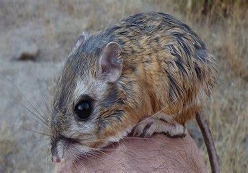
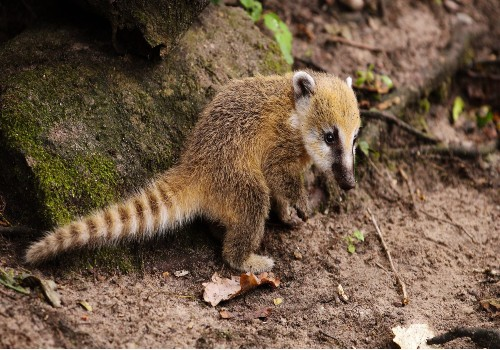

HISTORIA DE LA FUNDACIÓN DEL ESTADO
Un estado localizado en el Noroeste de México en Norteamérica abarca más de 10 milenios. La evidencia de poblaciones humanas se remonta a hace más de 10,000 años. El territorio contaba con algunas culturas indígenas antes del descubrimiento y conquista por los españoles en el siglo XVI. Existen varias teorías posibles para el origen del nombre Sonora. Unas dicen que el nombre se deriva de "Nuestra Señora", el nombre dado al territorio cuando Diego de Guzmán cruzó el río Yaqui el 7 de octubre, el día de Nuestra Señora del Rosario. La pronunciación del nombre pudo haber cambiado en parte porque ninguno de los idiomas indígenas del área tiene el sonido "ñ". Otra versión dice que Álvar Núñez Cabeza de Vaca y sus compañeros, que encallaron en la Florida y caminaron a través del continente, fueron forzados a cruzar lo que hoy es Sonora de norte a sur, cargando una imagen de Nuestra Señora de las Angustias en una manta. Este grupo se encontró con el pueblo Ópata, que no pudo pronunciar "Señora", y decían Senora o Sonora. Una tercera versión, escrita por el padre Cristóbal de Cañas en 1730, dice que el nombre viene de la palabra para un pozo natural de agua, "sonot" que los españoles eventualmente modificaron a Sonora. No se conoce a ciencia cierta si alguna de estas historias es verdad. El primero en utilizar el nombre Sonora fue el explorador Francisco Vázquez de Coronado que pasó por el estado en 1540, llamando a parte de la región el "Valle de La Sonora". En 1567, Francisco de Ibarra también viajó a través de la zona y mencionó los "Valles de Señora". Periodo prehispánico Hay evidencia de la existencia humana en el área desde hace más de 10,000 años, unas de las ruinas más conocidas son las del complejo de San Dieguito en el desierto de El Pinacate. Los primeros humanos fueron cazadores recolectores nómadas que usaban piedras, conchas y herramientas de madera. En gran parte del periodo prehistórico, las condiciones ambientales eran menos extremosas que lo que son hoy en día, la vegetación era similar, pero su distribución era más amplia y densa. La agricultura apareció por primera vez cerca de 400 a 200 años antes de nuestra era en los valles ribereños. El uso de la cerámica se desarrolló después del 750 de nuestra era y se diversificó entre los años 800 y 1350, la región tenía villas pequeñas pero socialmente complejas, que estuvieron involucradas en el redes de intercambio bien desarrolladas. Una excepción a esto fue la costa central baja, que nunca adoptó realmente la agricultura. Sonora y gran parte del noroeste de México no se considera parte de Mesoamérica, siendo Guasave en Sinaloa el asentamiento mesoamericano más noroccidental conocido, pero hay evidencia de que hubo intercambio comercial entre los pueblos de Sonora y Mesoamérica. Se distinguen tres culturas distintas que se desarrollaron en las áreas bajas del estado cerca de la costa, llamadas la cultura de Trincheras, la cultura de Huatabampo y la cultura de la Costa Central. La cultura de Trincheras data de entre el año 750 y el 1450 y es conocida principalmente por sitios en los valles de Altar, Magdalena y Concepción, pero su rango se extendió desde el Golfo de California hacia el norte de Sonora. La cultura se llama así por las trincheras que se encuentran en varios de los sitios arqueológicos, el más conocido de ellos es el Cerro de Trincheras. La cultura de Huatabampo se centra en el sur de la de Trincheras a lo largo de la costa, con sitios a lo largo de lagunas extintas, estuarios y valles ribereños. La cerámica es distintiva. La cultura muestra similitudes con los Chametla en el sur y con los Hohokam en el norte. Probablemente desapareció cerca del año 1000. A diferencia de las otras dos culturas, la de la Costa Central permaneció una cultura de cazadores recolectores, pues el área carece de recursos para la agricultura. Las elevaciones más altas del estado estuvieron dominadas por las culturas del Río Sonora y de Casas Grandes. La cultura del Río Sonora se localiza desde el centro de Sonora hasta el área de la frontera con el Sinaloa de hoy en día. Aún no se determina una fecha para el inicio de esta cultura pero probablemente desapareció a comienzos del siglo XII. La cultura de Casas Grandes en Sonora era una extensión de aquella basada en el actual estado de Chihuahua, y este pueblo extendía su influencia hacia la parte serrana de Sonora. Periodo virreinal Hay poca información confiable sobre el área en el siglo XVI, justo después de la conquista española del Imperio Azteca. Algunos declaran que el primer asentamiento español fue fundado por Álvar Núñez Cabeza de Vaca en 1530, cerca de Huépac. Otros dicen que Francisco Vázquez de Coronado fundó una villa a orillas del Río Yaqui en 1540 en su camino hacia el norte. Otros dicen que la primera presencia española no fue sino hasta 1614, hecha por misioneros tales como Pedro Méndez y Pérez de Rivas, trabajando en conjunto con los mayos. A diferencia de Mesoamérica en el centro de México, no había centralización social o económica en el área de Sonora, debido al colapso de los centros de población en el siglo XV. Las cinco culturas del pasado se habían dividido en varias etnias fracturadas. No había un imperio u otro sistema que cooperara con los españoles con propósitos de dominio. Además, hubo resistencia yaquí al entrometimiento español en sus tierras, lo cual mantuvo a los españoles fuera del área hasta el siglo XVI. A pesar de que hubo exploración del área con las expediciones del siglo XVI, no fue posible un asentamiento español permanente hasta el establecimiento del sistema de misiones. Los padres jesuitas comenzaron a trabajar en el área de Sonora en los 1610 en las áreas bajas cerca de la costa. Originalmente, estos misioneros trabajaron en compromiso de paz con los 30,000 yaquis de la región, lo que permitió el establecimiento de más de cincuenta asentamientos de misión en los valles de los ríos sonorenses. Esto se vino abajo cuando los jesuitas se opusieron a los chamanes nativos que comunicaban a los vivos con los muertos. Los ópatas recibieron mejor a los misioneros y se aliaron con ellos. Después de esto, los jesuitas comenzaron a moverse en los territorios de los pima y de los Tohono O’odham. El trabajo de exploración y misiones español fue suficiente para considerar al territorio parte de la Nueva España. Un acuerdo entre el General Pero de Perea y el virrey de la Nueva España resultó en la formación general de la provincia, llamada originalmente Nueva Andalucía en 1637, pero renombrada Sonora en 1648. El misionero más famoso de Sonora, así como en gran parte de lo que hoy es el suroeste de los Estados Unidos, es el jesuita italiano, Eusebio Francisco Kino, mejor conocido como El Padre Kino. Llegó a Sonora en 1687 y comenzó su trabajo en el área de la Pimería Alta de Sonora y Arizona. Fundó su primera misión en Cucurpe, después estableció iglesias y misiones en otras villas tales como Los Remedios, Ímuris, Magdalena, Cocóspera, San Ignacio, Tubutama, Caborca y otras. Además introdujo técnicas agrarias europeas entre los indígenas de los territorios donde predicaba. Murió en 1711 en Magdalena La violencia esporádica, que continuaría a lo largo del periodo colonial, resultó en la construcción de Presidios y otras fortificaciones para proteger las misiones y otros asentamientos de españoles por parte de los mismos. A pesar de que el proceso de colonización no fue especialmente violento, el impacto en los indígenas del área fue grave, pues interrumpió casi por completo sus vidas altamente independientes, forzándolos a conformarse con un sistema centralizado extranjero. Una consecuencia de esto fue el alcoholismo entre la población nativa. sta rebelión destruyó la reputación del sistema de misiones jesuita. En 1748 ocurrió otra rebelión seri, con apoyo de los Pimas y los Tohono O’otham y duró hasta los 1750. Esto mantuvo en desarreglo la situación de los asentamientos. En el norte de México la población estaba aproximadamente dividida en mitad indígena y mitad española, cerca de un cuarto de la población indígena vivía en Sonora por sí solo. En 1767, el rey de España, Carlos III, expulsó a los jesuitas de los territorios controlados por los españoles, terminando así el sistema de misiones. A finales del Siglo XVIII, Sonora junto con Sinaloa formaron parte de la Intendencia de Arizpe en la Nueva España, que fue la división territorial que antecedió al Estado de Occidente. Siglo XX Las políticas del gobierno de Porfirio Díaz no solo causaron resentimiento entre los yaquis, sino también en el resto de Sonora y el país. Uno de los antecedentes de la Revolución mexicana fue la huelga de Cananea de 1906, que buscaba negociaciones con el dueño minero estadounidense William C. Greene, pero este se negó a reunirse con los cerca de 2,000 huelguistas. La huelga se volvió violenta rápidamente cuando los mineros trataron de tomar control de la mina e intercambiaron disparos. Greene apeló a las tropas federales, pero cuando fue obvio que no llegarían a tiempo, apeló a Arizona y al gobierno sonorense para que permitiera ayudar a los voluntarios de Arizona. Esto incrementó la escala de la violencia. Cuando las tropas federales mexicanas llegaron dos días después, pusieron un fin brutal a todo, con la ejecución de los sospechosos de liderar la huelga. De tal suerte que la huelga hizo crecer el resentimiento hacia Díaz, y no disminuir las huelgas en otras zonas del país. A finales de 1910, estalló la Revolución mexicana y Díaz fue rápidamente depuesto del cargo, el resto de la guerra determinaría quién se quedaría en el poder después de esto. El entonces gobernador de Coahuila, Venustiano Carranza, buscó refugio en Sonora, y se convirtió en uno de los protagonistas principales durante el resto de la guerra, con su base de operaciones principal en Hermosillo. Varios de los líderes revolucionarios que se unieron a Carranza en Sonora no venían de raíces humildes sino de hacendarios de la clase media alta, dueños de comercios, trabajadores de rancho, maestros; a diferencia de los terratenientes, dueños a gran escala de tierras y la élite porfiriana. Después de que Díaz fue removido del cargo, Carranza estaba en disputa por el poder en contra de Álvaro Obregón y otros. Los yaquis se unieron a las fuerzas de Álvaro Obregón después de 1913. En la última mitad del siglo XX, la población del estado ha crecido y se ha incrementado la inversión extranjera debido a su localización estratégica cerca de la frontera y su puerto de Guaymas. Esto ha permitido el desarrollo de infraestructura moderna como carreteras, puertos y aeropuertos, lo que hace del estado uno de los mejores conectados del país. En 1964 se construyó un puente sobre el río Colorado para enlazar a Sonora con la vecina Baja California. Un sector importante de la economía ha sido la industria, que trajo consigo la planta Ford en Hermosillo y varias plantas de ensamble llamadas maquiladoras en la frontera con los Estados Unidos. Uno de los sectores de la economía con mayor crecimiento ha sido el turismo, en especial en la costa, esto ha llevado al surgimiento de infraestructura hotelera, en especial en Puerto Peñasco. Actualmente Sonora oficialmente llamado Estado Libre y Soberano de Sonora, es uno de los treinta y un estados que, junto con la Ciudad de México, conforman Mexico .Su capital y ciudad más poblada es Hermosillo. Está ubicado en la región noroeste del país, limitando al norte con Arizona (Estados Unidos), este con Chihuahua, al sur con Sinaloa y al oeste con el mar de Cortés o golfo de California (océano Pacífico) y con Baja California. Con 179 503 km² es el segundo estado más extenso —por detrás de Chihuahua— y con 14,83 hab/km², el quinto menos densamente poblado, por detrás de Campeche, Chihuahua, Durango y Baja California Sur. Fue fundado el 10 de enero de 1824. El territorio está conformado por cuatro provincias fisiográficas: la Sierra Madre Occidental, las Sierras y Valles Paralelos en el centro, el desierto y la costa del golfo de California. Está compuesto principalmente por desiertos semiáridos y praderas, en donde solo en las elevaciones más altas se presenta suficiente lluvia para sostener otros tipos de vegetación. Es hogar de ocho pueblos indígenas, entre ellos los mayos, los yaquis y los seris. Ha sido económicamente importante por su agricultura, su ganadería (en especial de res) y su minería desde el periodo colonial, y por su situación como estado fronterizo desde la Invasión estadounidense en México. Después de la venta de La Mesilla, Sonora perdió más de un cuarto de su territorio. Desde el siglo XX hasta el presente, la industria, el turismo y los agronegocios han dominado la economía, lo que ha atraído migración de otras partes de México. Se divide en 72 municipios. Su capital es Hermosillo. Otras localidades importantes son Ciudad Obregón, Navojoa, Caborca, Guaymas, Huatabampo, Puerto Peñasco, Nogales, Agua Prieta, San Luis Río Colorado, Nacozari de García y Cananea.
ANIMALES ENDEMICOS
RATA CANJURO
HALCON
TEJON SOLITARIO
TLACUACHE
TARANTULA

MOCHUELO DE LOS SAGUAROS

LINCE ROJO